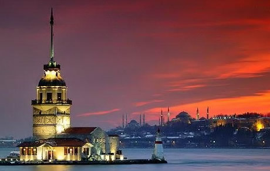
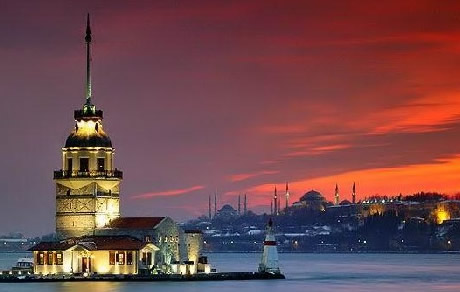
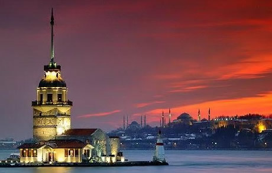

Located in the center of the Old World, Istanbul is one of the world's great cities famous for its historical monuments and magnificent scenic beauties. It is the only city in the world which spreads over two continents: it lies at a point where Asia and Europe are separated by a narrow strait - the Bosphorus. This year, Istanbul also holds the title of European Capital of Culture.
The event will take place at the Hotel Armada, which is located in the historic peninsula of Istanbul with views of two of the great masterpieces of world architecture; the Hagia Sophia and the Blue Mosque. It is within walking distance of many of the major attractions: the Archaeology Museum, the Topkapi Palace, the Church of St. Irene, Sultanahmet Square, the Cisterns, the Museum of Turkish and Islamic Art, the Grand Bazaar and the Spice Bazaar.
